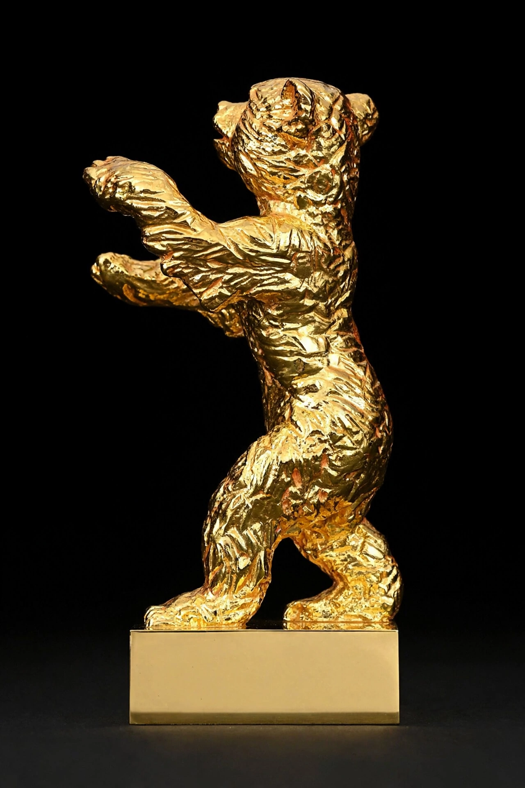

Golden Bear
| Golden Bear | |
|---|---|
 | |
| Country | Germany |
| Presented by | Berlin International Film Festival |
| First awarded | 1951 |
The Golden Bear (German: Goldener Bär) is the highest prize awarded for the best film at the Berlin International Film Festival (the Berlinale). The bear is the heraldic animal of Berlin, featured on both the coat of arms and the flag of Berlin. The winners of the first awards in 1951 were determined by a German panel; from 1952 to 1955 the prizes were determined by public vote, and from 1956 onward they have been chosen by an international jury.
History
The Golden Bear was introduced at the first Berlinale in 1951. During the early years, the awards were given in several categories. After the festival received official competitive status from FIAPF in 1956, a single top prize decided by an international jury became the standard. Prize winners were allowed to be involved in the creation of the trophy; the design, based on the Berlin bear, is attributed to the sculptor Renée Sintenis, whose bear sculptures are a Berlin landmark.
The jury also awards Silver Bears for best director, best leading and supporting performances, best screenplay, and an outstanding artistic contribution, as well as the Jury Grand Prix and jury prizes.
Notable winners
Golden Bear winners include …And Justice for All-era classics such as 12 Angry Men (1957), Wild Strawberries (1958), Alphaville (1965), Buffalo Bill and the Indians (1976), Rain Man (1989), The People vs. Larry Flynt (1997), Spirited Away (2002, shared), Head-On (2004), A Separation (2011), Taxi (2015), Fire at Sea (2016), Synonyms (2019), Alcarràs (2022), On the Adamant (2023), and Dahomey (2024).
Ang Lee is the only director to have won the Golden Bear twice, for The Wedding Banquet (1993) and Sense and Sensibility (1996).
The trophy
The statuette depicts a bear standing on its hind legs, modeled on Renée Sintenis's design. Sintenis's small bronzes of young animals, and especially her Berlin bear, became an emblem of the city during the Weimar era and after the Second World War.
See also
- Palme d'Or, the top prize at Cannes
- Golden Lion, the top prize at Venice
- Berlin International Film Festival
- Berlin